MENA COSMETICS · เล่ม 1 จาก 3
คู่มือพนักงาน — ระบบลางาน
สำหรับพนักงานทุกคน — ส่งใบลาผ่านไลน์ ดูสถานะ แนบใบรับรองแพทย์ทีหลัง ถอนหรือยกเลิกใบลา
ทุกอย่างทำในแชทไลน์ของบริษัท ไม่ต้องกรอกกระดาษ
ฉบับวันที่ 16 ตุลาคม 2569 · ระบบ ลางาน MENA COSMETICS · ไลน์บริษัท @966nnfkr
เริ่มใช้
ผูกบัญชี 1 ครั้ง
รหัสพนักงาน + ชื่อ-นามสกุล
ลาได้แบบ
ทั้งวัน / ชั่วโมง
ลาครึ่งวันใช้แบบชั่วโมง
ป่วยกะทันหัน
ส่งได้ทันที
ใบแพทย์แนบตามทีหลังได้
รู้ผลทาง
ไลน์
ระบบแจ้งทุกครั้งที่มีคนตัดสิน
01
เริ่มต้น — ผูกบัญชีแล้วใช้เมนูด้านล่างแชท
ครั้งแรกที่ใช้ต้อง ผูกบัญชี ก่อน: เพิ่มเพื่อนไลน์บริษัท @966nnfkr → กดปุ่ม
ผูกบัญชีของฉัน ในข้อความต้อนรับ (หรือกดเมนู ส่งใบลา แล้วกด ผูกบัญชีของฉัน ) → กรอก
รหัสพนักงาน กับ ชื่อ-นามสกุล → กด ผูกบัญชี ใช้งานได้ทันที
รายละเอียดทุกขั้นและกรณีผูกไม่สำเร็จอยู่ใน คู่มือผูกบัญชีเข้าระบบลางาน (แยกอีกเล่ม)
หลังผูกบัญชีแล้ว ทุกอย่างเริ่มจากเมนูด้านล่างแชทไลน์บริษัท
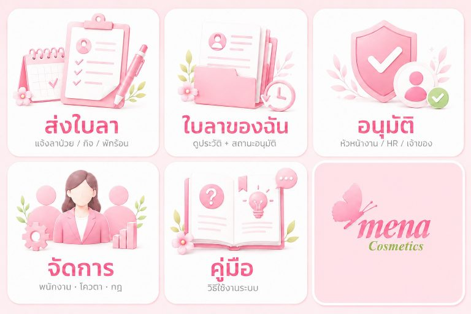
เมนูด้านล่างแชท — พนักงานใช้ 3 ปุ่ม: ส่งใบลา · ใบลาของฉัน · คู่มือ
(ปุ่ม อนุมัติ กับ จัดการ สำหรับหัวหน้างาน ฝ่ายบุคคล และผู้บริหาร)
02
ส่งใบลา — 3 ขั้น
กดเมนู "ส่งใบลา" ขั้นที่ 1 เงื่อนไข แสดงโควตาคงเหลือปีนี้ (ลาป่วย · ลากิจ · ลาพักร้อน)
และเงื่อนไขของแต่ละประเภท เช่น ต้องแจ้งล่วงหน้ากี่วัน อ่านแล้วกด เริ่มเขียนใบลา ขั้นที่ 2 กรอกข้อมูล เลือก ประเภทการลา → เลือก ลาเป็น ทั้งวัน หรือ เป็นชั่วโมง
→ เลือก วันที่เริ่มลา และ วันที่สิ้นสุด → พิมพ์ เหตุผล (อย่างน้อย 3 ตัวอักษร)
→ แนบรูปได้ที่ แนบไฟล์ (รูปภาพ) ถ้ามี (ไม่บังคับ) แล้วกด ถัดไป ขั้นที่ 3 ส่ง ระบบขอตำแหน่ง GPS เพื่อยืนยันว่าคุณกดส่งเอง (บันทึกครั้งเดียวตอนส่ง ไม่ติดตามตลอดเวลา)
ตรวจ สรุปก่อนส่ง ให้ถูก แล้วกด ส่งใบลา ได้เลขที่ใบลา หน้าจอขึ้น ส่งใบลาสำเร็จ พร้อมเลขที่ใบลา และไลน์จะส่งการ์ดยืนยันมาให้
บอกว่าใบลารอใครตรวจเป็นขั้นถัดไป
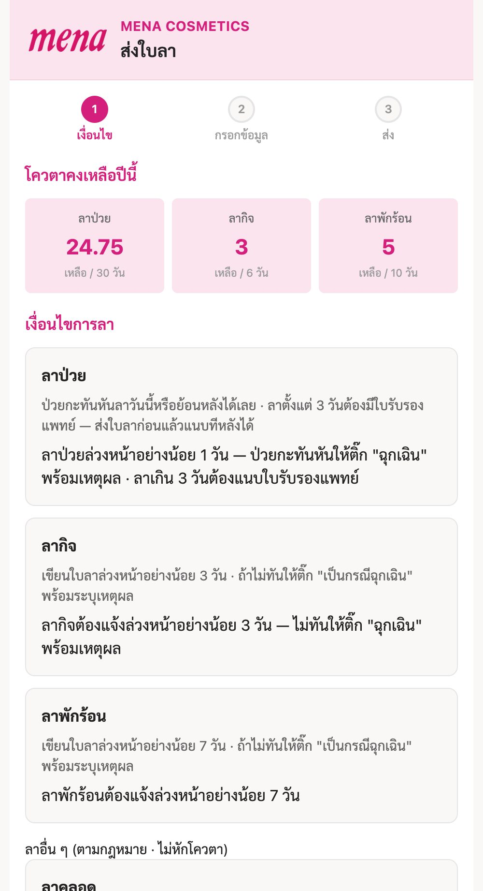
ขั้นที่ 1 — ตัวเลขใหญ่คือวันที่ยังลาได้ (ไม่นับวันที่รออนุมัติอยู่) · เงื่อนไขของลาอื่น ๆ ตามกฎหมายอยู่ถัดลงไปในหน้าเดียวกัน
ตัวเลขและชื่อในภาพทั้งเล่มเป็นข้อมูลตัวอย่าง
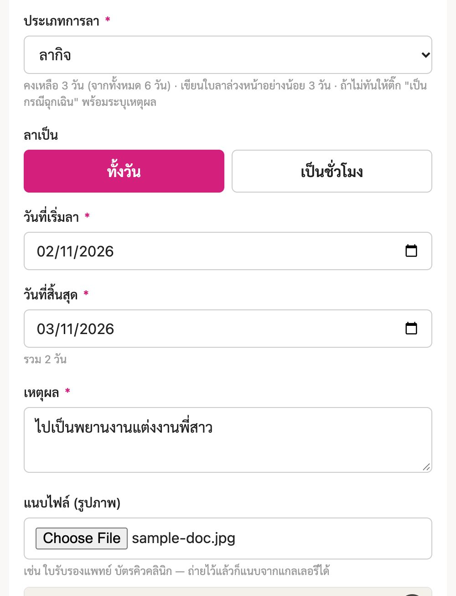
ลาทั้งวัน — ใต้วันที่สิ้นสุดบอกว่ารวมกี่วัน วันหยุดบริษัทไม่นับเป็นวันลา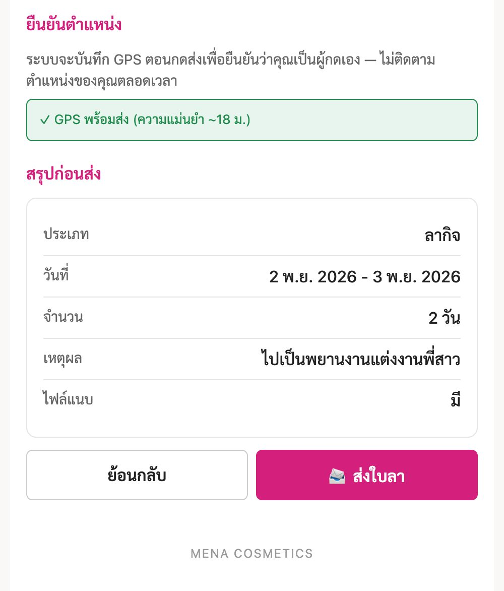
ขั้นที่ 3 — GPS พร้อมส่ง แล้วตรวจสรุปก่อนกด ส่งใบลา
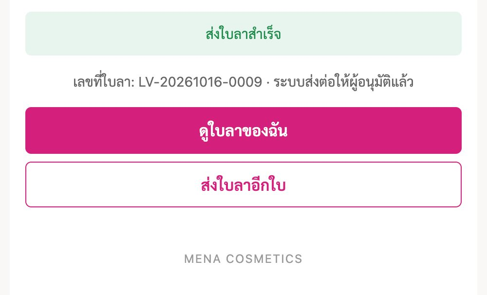
ส่งสำเร็จ — กด ดูใบลาของฉัน เพื่อติดตามสถานะ หรือ ส่งใบลาอีกใบ 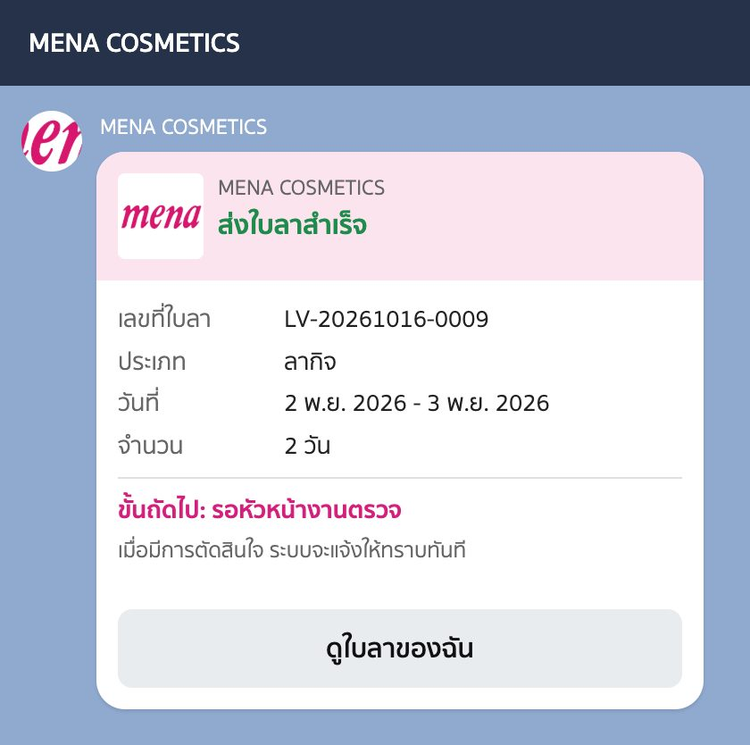
การ์ดในไลน์ — บอกเลขที่ใบลาและขั้นถัดไป (ภาพจำลองการ์ดจากข้อมูลที่ระบบสร้างจริง หน้าตาในแอปไลน์อาจต่างเล็กน้อย)
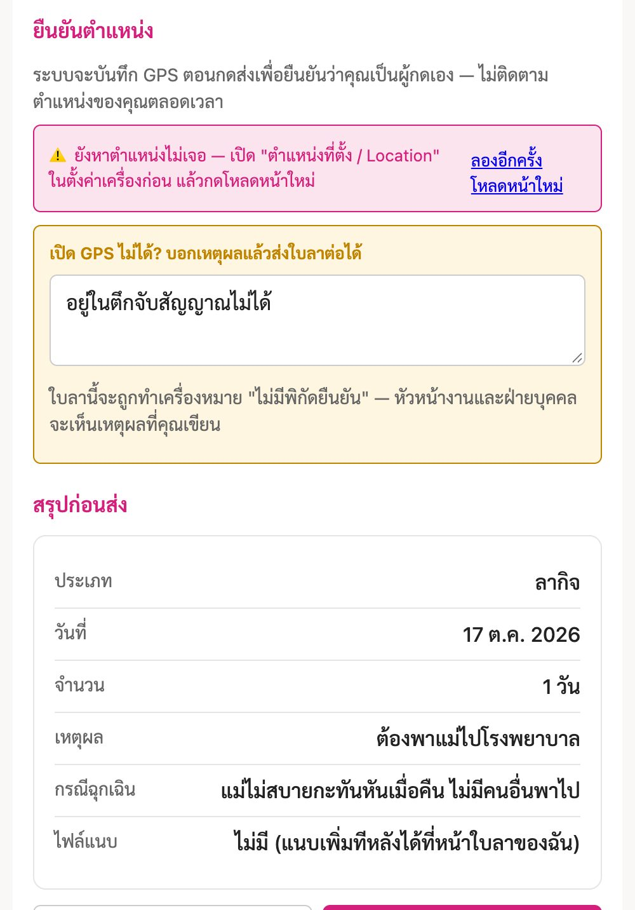
ถ้าอ่านตำแหน่งไม่ได้ — เปิด Location ในเครื่องแล้วกด ลองอีกครั้ง หรือ โหลดหน้าใหม่
ถ้ายังไม่ได้ พิมพ์เหตุผลอย่างน้อย 5 ตัวอักษรในช่อง เปิด GPS ไม่ได้? บอกเหตุผลแล้วส่งใบลาต่อได้ แล้วกดส่งได้ตามปกติ
ใบลาจะติดป้าย "ไม่มีพิกัดยืนยัน" ให้ผู้อนุมัติเห็นเหตุผล
ประเภทการลาที่เลือกได้
ลาป่วย · ลากิจ · ลาพักร้อน — หักโควตาของปีที่ลา
ลาอื่น ๆ — เลือกแล้วจะมีช่อง ประเภทลาอื่น ๆ ให้เลือกต่อ: ลาคลอด · ลาช่วยภรรยาดูแลบุตร · ลาเพื่อทำหมัน ·
ลาเพื่อรับราชการทหาร · ลาเพื่อรับการฝึกอบรม · ลาอุปสมบท — เป็นลาตามกฎหมาย ไม่หักโควตา แต่ต้องแจ้งล่วงหน้าตามเงื่อนไข
โควตาไม่พอ ระบบไม่ให้ส่งเกินวันคงเหลือ — ถ้าจำเป็นต้องลาเกินจริง ติดต่อฝ่ายบุคคลลาย้อนหลัง (วันเริ่มลาก่อนวันนี้) ส่งได้เฉพาะ ลาป่วย และ ลาคลอด เท่านั้น ประเภทอื่นต้องส่งก่อนถึงวันลาช่วงเวลาซ้อนกับใบเดิม ส่งไม่ได้ — ถ้าจะเปลี่ยนวัน ให้ถอนหรือขอยกเลิกใบเดิมก่อน (หัวข้อ 8)ลาติดกันเกินที่กำหนด หรือ ลาหลายวันแต่ไม่แนบเอกสาร ในประเภทที่บังคับ ระบบจะแจ้งเหตุผลให้ทันทีตอนกดส่ง
03
ลาเป็นชั่วโมง (ใช้แทนลาครึ่งวัน)
ระบบไม่มีปุ่ม "ลาครึ่งวัน" แยก — ลาไม่เต็มวันให้กด เป็นชั่วโมง แล้วเลือกช่วงเวลา
เช่น ลาช่วงเช้า เลือก 08:30 ถึง 12:00
เลือกประเภทการลา ปุ่ม ลาเป็น จะโผล่เฉพาะประเภทที่ลาเป็นชั่วโมงได้ (ตั้งต้นคือ ลาป่วย · ลากิจ · ลาพักร้อน) กด "เป็นชั่วโมง" ช่องวันที่จะเหลือช่องเดียวคือ วันที่ลา และมีช่อง ช่วงเวลาที่ลา เพิ่มมา เลือกเวลาเริ่ม และเวลาสิ้นสุด เลือกได้ทีละครึ่งชั่วโมงภายในเวลางาน ใต้ช่องจะบอกว่ารวมกี่ชั่วโมงและหักโควตากี่วัน
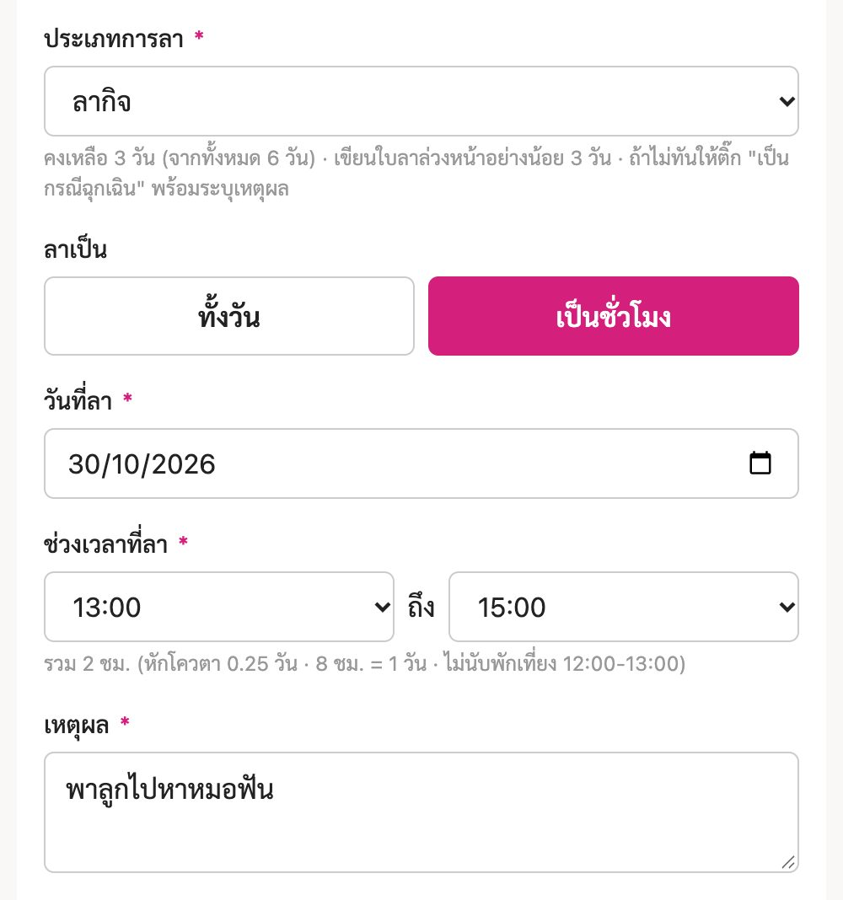
ลา 13:00–15:00 = 2 ชั่วโมง หักโควตา 0.25 วัน (8 ชั่วโมงนับเป็น 1 วัน)
ช่วงพักเที่ยง (ตั้งต้น 12:00–13:00) ไม่นับ เป็นชั่วโมงลา
ลาได้ อย่างน้อย 30 นาที · ถ้ารวมได้เท่าเต็มวันแล้ว ระบบให้เลือก ทั้งวัน แทน
วันที่เลือกต้องเป็นวันทำงานของบริษัท
04
แจ้งล่วงหน้าไม่ทันกำหนด — ติ๊ก "เป็นกรณีฉุกเฉิน"
แต่ละประเภทลามีกำหนดแจ้งล่วงหน้า (ตั้งต้น ลากิจ 3 วัน · ลาพักร้อน 7 วัน) ถ้าวันที่เลือกกระชั้นกว่านั้น
จะมีกล่องสีเหลืองขึ้นมา ระบบ ไม่บล็อก ให้ส่งไม่ได้ แต่ต้องบอกเหตุผล
ติ๊ก "เป็นกรณีฉุกเฉิน จำเป็นต้องลาทั้งที่แจ้งไม่ทันกำหนด" อยู่ในกล่องสีเหลืองใต้ช่องเหตุผล พิมพ์เหตุผลที่ต้องลาเร่งด่วน อย่างน้อย 10 ตัวอักษร (ค่าตั้งต้น) ใบลาจะติดป้าย "แจ้งไม่ทันกำหนด" ให้ผู้อนุมัติเห็น
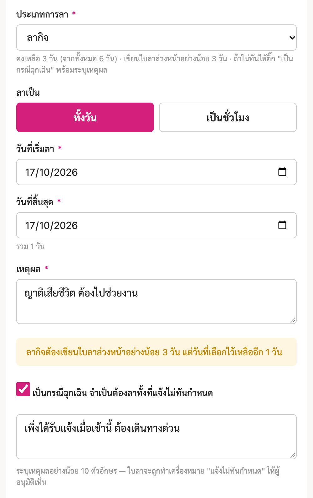
ลากิจพรุ่งนี้ — ไม่ทันกำหนด 3 วัน จึงต้องติ๊กและเขียนเหตุผลถ้าฝ่ายบุคคลตั้งประเภทนั้นให้ ไม่เปิดกรณีฉุกเฉิน ช่องติ๊กจะกดไม่ได้และระบบบอกให้เลือกวันที่ใหม่
05
ลาป่วยกะทันหัน + แนบใบรับรองแพทย์ทีหลัง
ลาป่วยวันนี้ หรือย้อนหลัง ส่งได้เลย เลือก ลาป่วย แล้วเลือกวันที่ตามจริง ไม่ต้องติ๊กฉุกเฉิน
ใบลาจะติดป้าย ลากะทันหัน ให้ผู้อนุมัติเห็นเอง — อย่าลืมโทรแจ้งหัวหน้างานด้วย ลาหลายวันที่ต้องมีใบรับรองแพทย์ ถ้าลาตั้งแต่จำนวนวันที่บริษัทกำหนด (ตั้งต้น 3 วัน) จะขึ้นกล่องบอกว่า
ต้องมีใบรับรองแพทย์ — ยังไม่มีก็ส่งใบลาไปก่อนได้ ได้ใบรับรองแพทย์แล้ว ค่อยแนบ เมนู ใบลาของฉัน → แตะใบลานั้น → กล่อง แนบเอกสารเพิ่ม
→ เลือกรูป → พิมพ์คำอธิบาย (ไม่บังคับ) → กด ส่งเอกสาร แนบได้หลายครั้ง
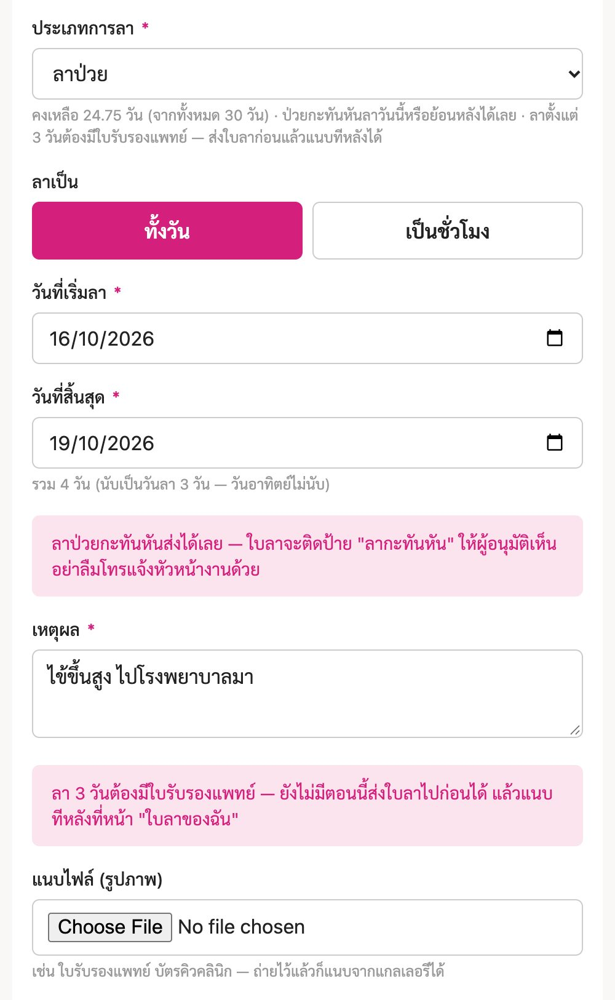
ลาป่วยวันนี้ 3 วัน — กล่องบอกว่าส่งได้เลย และแนบใบแพทย์ทีหลังได้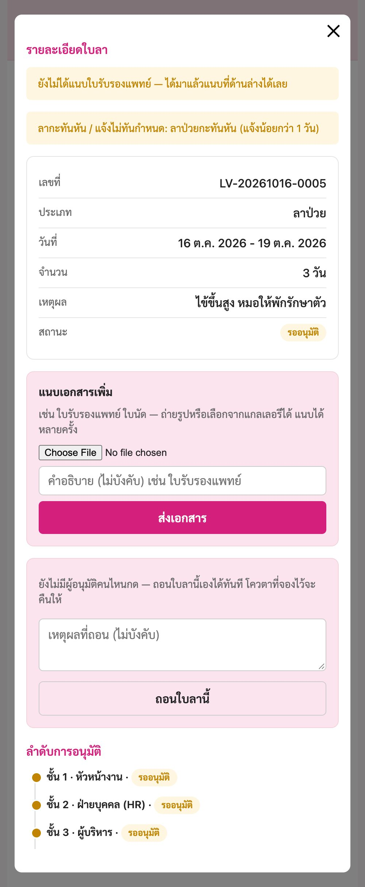
ใบลาที่ยังไม่ได้แนบ — กล่องเหลืองเตือนด้านบน กล่องชมพู แนบเอกสารเพิ่ม อยู่ตรงกลาง
06
ใบลาของฉัน — ดูสถานะและลำดับการอนุมัติ
กดเมนู "ใบลาของฉัน" เห็นใบลาทุกใบเรียงจากใหม่ไปเก่า พร้อมป้ายสถานะด้านขวา แตะใบลา เปิด รายละเอียดใบลา ด้านล่างสุดคือ ลำดับการอนุมัติ บอกว่าแต่ละชั้นใครกดแล้ว เมื่อไหร่ และหมายเหตุ
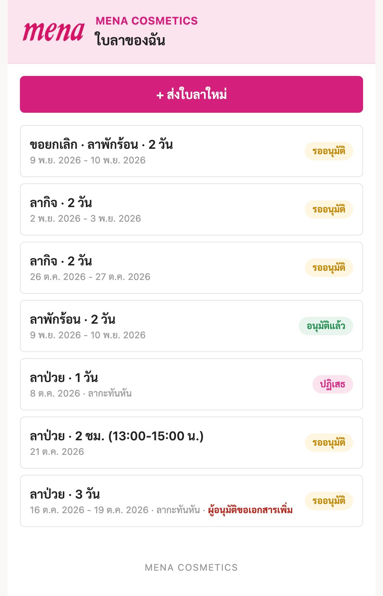
รายการใบลา — ตัวแดง "ผู้อนุมัติขอเอกสารเพิ่ม" แปลว่าต้องแนบเอกสาร (หัวข้อ 7)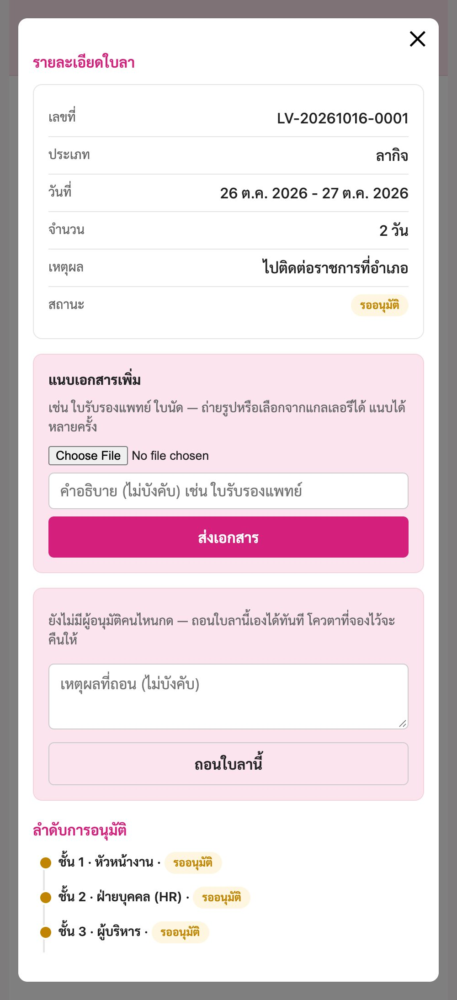
รายละเอียดใบลา — ลำดับการอนุมัติ 3 ชั้น จุดสีเหลือง = ยังรอ จุดสีเขียว = อนุมัติแล้ว
ป้ายสถานะ ความหมาย
รออนุมัติ ยังมีผู้อนุมัติบางชั้นที่ยังไม่กด — ยังไม่หักโควตาจริง แต่กันวันไว้แล้ว อนุมัติแล้ว ผ่านครบทุกชั้น หักโควตาแล้ว ปฏิเสธ มีผู้อนุมัติไม่อนุมัติ — ดูเหตุผลในลำดับการอนุมัติ วันที่กันไว้คืนให้แล้ว ถอนแล้ว คุณถอนใบลาเอง ยกเลิกแล้ว ใบที่เคยอนุมัติแล้วถูกยกเลิกตามคำขอ คืนโควตาแล้ว ข้าม (ในลำดับการอนุมัติ) ชั้นนั้นไม่ต้องผ่าน เช่น ไม่มีหัวหน้างานในสาย
ทุกครั้งที่มีคนตัดสินใบลาของคุณ ไลน์จะส่งการ์ดแจ้ง — อนุมัติครบจะได้การ์ด ใบลาได้รับอนุมัติแล้ว
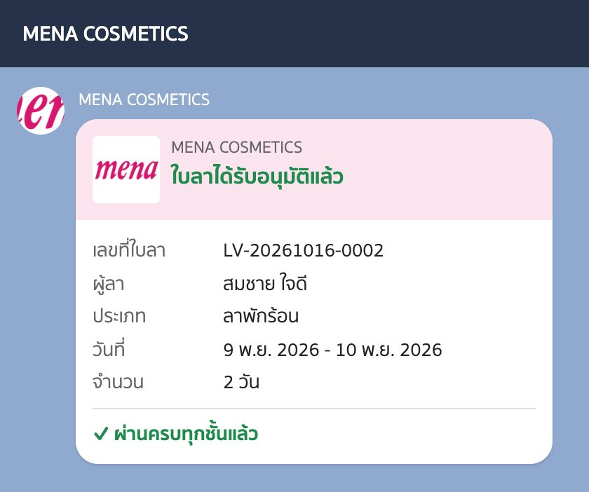
การ์ดเมื่ออนุมัติครบทุกชั้น
07
ผู้อนุมัติขอเอกสารเพิ่ม — ส่งยังไง
ผู้อนุมัติอาจขอเอกสารเพิ่มก่อนตัดสิน เช่น ขอใบรับรองแพทย์ ใบลาจะ ยังไม่ถูกตัดสิน และค้างรอคุณอยู่
ได้การ์ด "ผู้อนุมัติขอเอกสารเพิ่ม" ในไลน์ การ์ดบอกว่าต้องการเอกสารอะไร และใครเป็นคนขอ กดปุ่ม แนบเอกสาร หน้ารายละเอียดใบลาเปิดขึ้นมา กล่องแดงด้านบนบอกสิ่งที่ขอ เลื่อนลงมาที่ แนบเอกสารเพิ่ม เลือกรูป → พิมพ์คำอธิบาย → กด "ส่งเอกสาร" ถ่ายใหม่หรือเลือกจากแกลเลอรีก็ได้ ระบบจะแจ้งผู้อนุมัติให้กลับมาพิจารณาต่อ
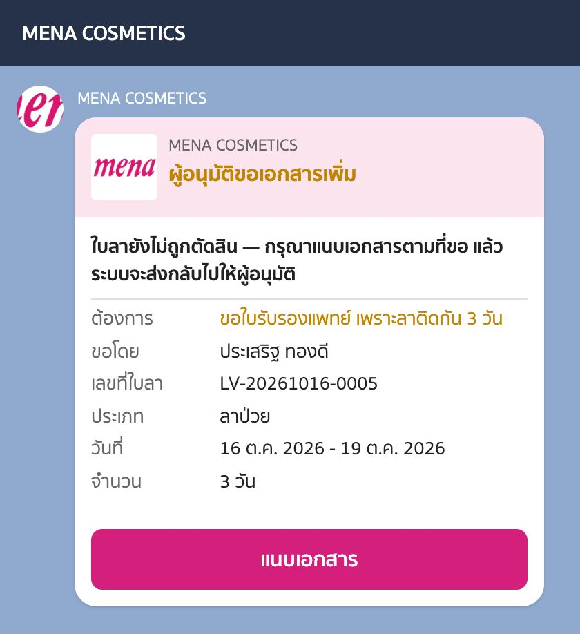
การ์ดขอเอกสาร — "ต้องการ" คือสิ่งที่ผู้อนุมัติพิมพ์มา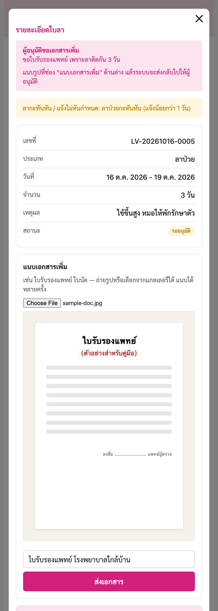
เลือกรูปแล้ว — ตรวจรูปที่แสดงตัวอย่าง แล้วกด ส่งเอกสาร (ปุ่มเลือกไฟล์ในมือถือจะเป็นภาษาของเครื่อง)
ถ้ายังไม่ได้แนบ ระบบจะส่งการ์ดเตือนคุณซ้ำในเวลางาน · แนบเอกสารได้เฉพาะใบลาที่รออนุมัติหรืออนุมัติแล้วเท่านั้น
08
ถอนใบลา / ขอยกเลิกวันลา
สถานะใบลา ปุ่มที่เห็น เกิดอะไรขึ้น
รออนุมัติ ถอนใบลานี้ ถอนได้ทันทีไม่ต้องรอใคร วันที่กันไว้คืนให้เลย เหตุผลไม่บังคับ อนุมัติแล้ว ขอยกเลิกวันลา ต้องเขียนเหตุผลอย่างน้อย 5 ตัวอักษร ระบบส่ง ใบขอยกเลิก ให้ผู้อนุมัติชุดเดิมพิจารณาตามลำดับเดิม
อนุมัติครบแล้วใบลาเดิมจะเป็น "ยกเลิกแล้ว" และคืนโควตา ปฏิเสธ / ถอนแล้ว / ยกเลิกแล้ว ไม่มีปุ่ม ใบปิดแล้ว ถ้าจะลาใหม่ให้ส่งใบใหม่
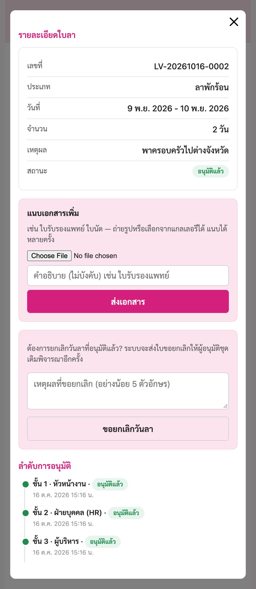
ใบลาที่อนุมัติแล้ว — พิมพ์เหตุผลในช่อง แล้วกด ขอยกเลิกวันลา
ในรายการใบลาจะเห็นใบใหม่ขึ้นต้นว่า "ขอยกเลิก ·" สถานะรออนุมัติส่งใบขอยกเลิกซ้ำไม่ได้ระหว่างที่ใบเดิมยังรออยู่ · ถ้าใบขอยกเลิกไม่ได้รับอนุมัติ ใบลาเดิมยังอนุมัติอยู่เหมือนเดิม
09
หน้า "บัญชีของคุณ"
เปิดได้จากปุ่ม ดูสถานะของฉัน (โผล่เมื่อยังไม่ได้ผูกบัญชี) ใช้เช็กว่าบัญชีผูกกับใคร สถานะอะไร
และมี LINE User ID ของคุณ ถ้าฝ่ายบุคคลขอให้ส่ง ID ให้กด คัดลอก User ID แล้ววางในแชท
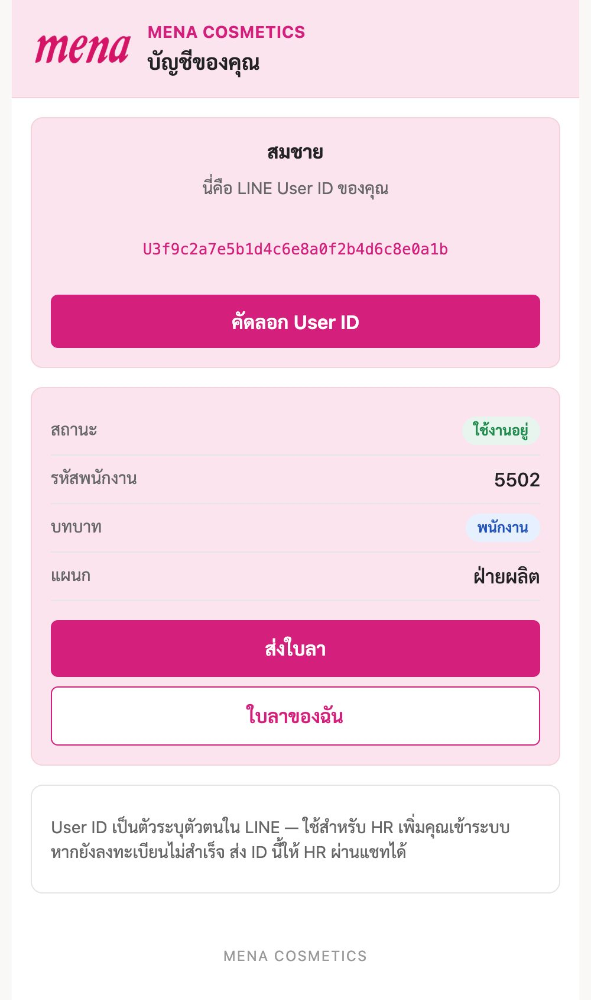
สถานะใช้งานอยู่ — บอกรหัสพนักงาน บทบาท และแผนก มีปุ่มลัดไปส่งใบลาและใบลาของฉัน
(User ID ในภาพเป็นค่าสมมติ)
ส่งคำขอลงทะเบียนแล้ว รอ HR อนุมัติ — ผูกด้วยรหัสจับคู่แล้ว รอฝ่ายบุคคลกดอนุมัติบัญชีถูกระงับการใช้งาน — ติดต่อฝ่ายบุคคลคุณยังไม่ได้ผูกบัญชีกับระบบ — กด ผูกบัญชีของฉัน
10
ลาแทนคนอื่น (พนักงานพิเศษ · HR · ผู้บริหาร)
คนที่มีระดับ พนักงานพิเศษ , HR หรือ ผู้บริหาร จะเห็นช่อง ส่งใบลาให้ บนสุดของขั้นที่ 2
เลือกชื่อเพื่อนร่วมงานที่ใช้แอปเองไม่สะดวก แล้วกรอกต่อตามปกติ ใบลาจะวิ่งไปตามสายอนุมัติของ เจ้าของใบ
และเจ้าของใบได้การ์ดแจ้งด้วยถ้าผูกไลน์ไว้
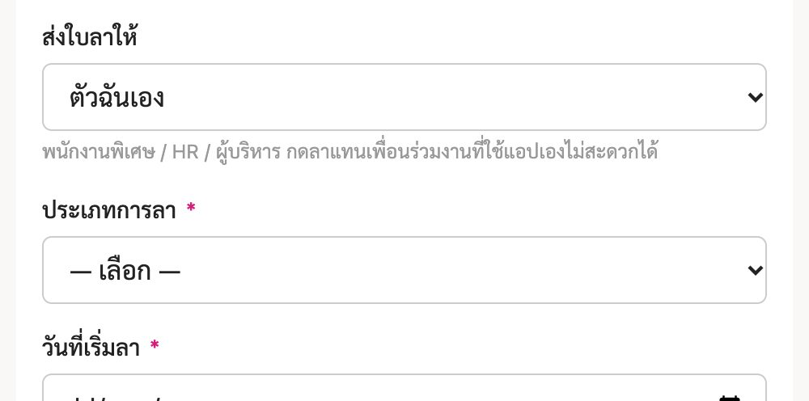
ช่อง "ส่งใบลาให้" — ค่าเริ่มต้นคือ ตัวฉันเอง · ลาแทนผู้บริหารไม่ได้
11
อาการที่เจอบ่อย
อาการ / ข้อความ แปลว่าอะไร ทำอะไร
กดส่งใบลาแล้วขึ้นว่ายังไม่ได้ผูกบัญชี ยังไม่เคยผูก หรือเปลี่ยนบัญชีไลน์ กด ผูกบัญชีของฉัน (ดูคู่มือผูกบัญชี) บัญชีของคุณพ้นสภาพ / ถูกปิดการใช้งาน ฝ่ายบุคคลปิดบัญชีไว้ ติดต่อฝ่ายบุคคล โควตาคงเหลือ X วัน ลาได้ไม่เกินนี้ วันที่ขอเกินวันคงเหลือ ลดจำนวนวัน หรือคุยกับฝ่ายบุคคล ลาย้อนหลังทำได้เฉพาะลาป่วย/ลาคลอดฉุกเฉินเท่านั้น เลือกวันที่ผ่านมาแล้วกับประเภทอื่น เปลี่ยนวันที่ หรือคุยกับหัวหน้างาน/ฝ่ายบุคคล ต้องเขียนใบลาล่วงหน้าอย่างน้อย X วัน แจ้งไม่ทันกำหนด ติ๊ก เป็นกรณีฉุกเฉิน + เหตุผล (หัวข้อ 4) ช่วงนี้มีใบลาอยู่แล้ว วันที่ซ้อนกับใบที่รอ/อนุมัติแล้ว ถอนหรือขอยกเลิกใบเดิมก่อน (หัวข้อ 8) วันที่เลือกเป็นวันหยุดของบริษัท ทั้งช่วงเป็นวันหยุด ไม่ต้องลา ถ้าวันหยุดในระบบไม่ตรงความจริง แจ้งฝ่ายบุคคล GPS ไม่พร้อม / ยังหาตำแหน่งไม่เจอ มือถือไม่ให้ตำแหน่ง เปิด Location แล้วกด ลองอีกครั้ง หรือ โหลดหน้าใหม่ — ไม่ได้จริง ๆ พิมพ์เหตุผลอย่างน้อย 5 ตัวอักษรในช่อง เปิด GPS ไม่ได้? แล้วส่งต่อได้ ลาเป็นชั่วโมงได้ขั้นต่ำ 30 นาที / ลาเท่ากับเต็มวันแล้ว ช่วงเวลาสั้นหรือยาวเกินแบบชั่วโมง ปรับเวลา หรือกด ทั้งวัน ไม่เห็นปุ่ม "ลาเป็น" ประเภทนั้นลาเป็นชั่วโมงไม่ได้ ลาเป็นวันแทน ส่งไปหลายวันแล้วยังไม่มีใครกด ผู้อนุมัติยังไม่ได้ดู ระบบเตือนผู้อนุมัติซ้ำเอง ถ้านานผิดปกติแจ้งหัวหน้างาน/ฝ่ายบุคคล เปิดหน้าไม่ขึ้น / ค้างที่กำลังโหลด สัญญาณอินเทอร์เน็ตไม่นิ่ง ปิดหน้าแล้วกดเมนูเข้าใหม่
ติดต่อฝ่ายบุคคลได้ทางไลน์บริษัท หรือเมนู คู่มือ → หัวข้อ ติดต่อ HR
คู่มือพนักงาน — ระบบลางาน · MENA COSMETICS · ฉบับวันที่ 16 ตุลาคม 2569